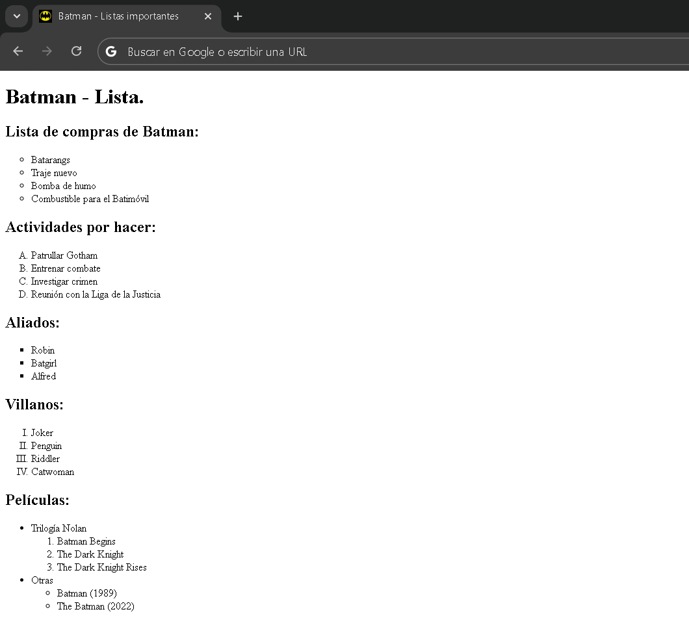

Las listas en HTML prmiten organizar información de forma ordenada o desordenada. Son muy utilizadas para mostrar elementos relacionados entre sí.
Existen dos tipos principales de listas
<ul>)Se utiliza cuando el orden de los elementos no es importante. Cada elemento se muestra con una viñeta.
Sintaxis:
<ul>
<li>Manzana</li>
<li>Banana</li>
<li>Naranja</li>
</ul>
Ejemplo:
• Manzana
• Banana
• Naranja
<ol>)Se utiliza cuando el orden de los elementos sí es importante. Los elementos se numeran automáticamente.
Sintaxis:
<ol>
<li>Primer paso</li>
<li>Segundo paso</li>
<li>Tercer paso</li>
</ol>
Ejemplo:
- Primer paso
- Segundo paso
- Tercer paso
<li>)
Cada elemento dentro de una lista se define con la etiqueta <li>. Se usa tanto dentro de <ul> como de <ol>.
Las listas ordenadas permiten cambiar el tipo de numeración con el atributo type.
1 → Números (1, 2, 3). Predeterminado
A → Letras mayúsculas (A, B, C).
a → Letras minúsculas (a, b, c).
I → Números romanos (I, II, III).
i → Números romanos minúsculas (i, ii, iii).
type en <ul>
El atributo type en la etiqueta <ul> (Lista desordenada) define el estilo de viñeta.
disc → Lista con círculo rellenos.
circle → Lista con círculos vacíos.
square → Lista con cuadrados.
start → Permite comenzar la numeración desde otro valor.
reversed → invierte el orden de la lista.
Realice el documennto según la siguiente imagen:

Etiquetas utilizadas: h1, h2, ul, ol, li y linkfavicon.